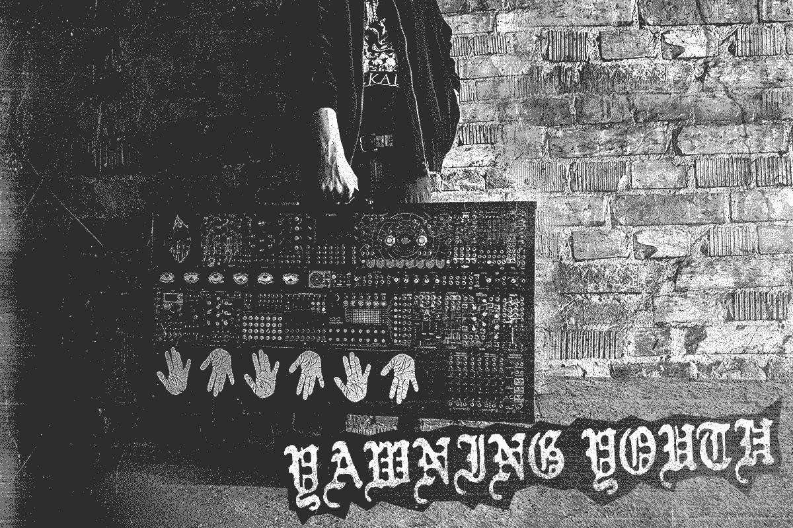
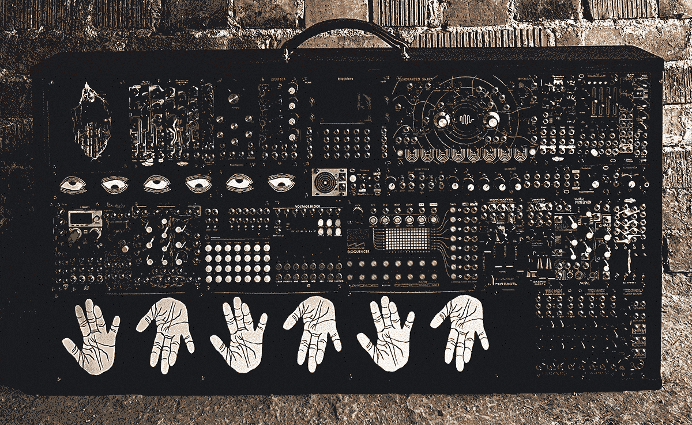

Interview: Yawning Youth
10/07/2022

Yawning Youth seems to have literally appeared out of the abyss this past month- what can you tell us about the origins of the project? Have you got previous projects/bands that have led to this?
First of all, thank you so much for having me. I really appreciate the opportunity to talk a little bit about my project.
I did vocals for a few bands in the past. That was fun but I always wanted to do something by myself. In 2019 I decided to give Ableton a go. Since I never played an instrument I figured this could be a good choice for me. It was fun but the process of making music with it didn’t feel very natural to me.
At the start of 2021 I discovered modular synthesizers and was immediately fascinated. I couldn’t really sleep because I was trying to figure out how to start this journey. A couple of months later I took the plunge and started my project under the name of Yawning Youth.
Your system looks (and sounds) epic. Can you tell us a bit about your setup and thinking behind your rack? Are all of the sounds of the demo from within the rack?
Before I started the modular journey my goal was to build a rack that inspires me to make music. I wanted to create music that sounds aggressive but is versatile at the same time. I still have a long way to go and my goal hasn’t changed since. I’m eyeing a couple more voices, filters and fx modules that hopefully will shape my sound even more. Also playability becomes a more important factor.
I don’t use any other gear as I want to do everything inside the rack. All the sounds and fx, besides one sample and a skit, are coming from within the rack. I sampled a lot from BIA with Bitbox. I use additional compressors and EQs inside Ableton to level and highlight everything.
Are there any module companies in your rack that you don’t think get enough attention or that more people should check out?
As a newcomer to the modular world I would say Ritual Electronics. They seem to approach everything the way that feeds my needs and help to shape my sound. Also Threetom Modular made a fantastic filter.

From the Abyss of Discomfort is super heavy- is all of the distortion from the modules in the rack?
Yes! Dark Matter, Waver and Guillotine do the heavy lifting.
You released your demo at the start of June- what’s next- are you planning any merch or live shows?
Playing live is definitely something I want to do. But to be honest I’m not there yet. I’m in the process of doing some screen prints as this is something I really enjoy doing. I’m planning to print posters and possibly back patches. At the moment I’m also finishing another record which I want to release as tape along with my demo. .